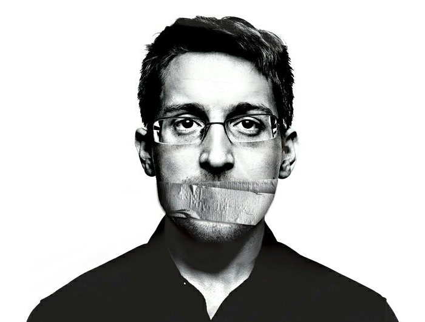

Det er mange dilemma knytte til tryggleik. Dette kan ha med funksjonalitet å gjøre - at en opplever tryggleik som noe tungvint eller gammaldags. lange passord med blandinger av tal, store og små bokstaver og spesialteikn kan være et døme på det. Dersom tryggingstiltak blir for tungvinne å ha med og gjøre, blir resultatet av og til mindre tryggleik.
Ofte kan det og bli ei motsetning mellom det som trengs av tryggingstiltak, og omsynet til personvernet for den enkelte. Personvern handler om at våre personlige data skal ha vern.
Etterretning er informasjon som er henta inn gjennom innsamling, observasjon og analyse. Informasjon blir ofte henta inn om en fiende eller om en trussel. Kva statlig etterretning driv med, blir sjølvsagt holdt nokså hemmelig. Særlig har system for elektronisk overvåking våre verna og hemmelige, for kunnskap om hvordan overvåkninga går føre seg, vil kunne redusere verdien av informasjonen.
Denne ellers så beskytta delen av samfunnet vart i Juni 2013 utsatt for en lekkasje om det strengt hemmelige etterretningsprogrammet Prism Lekkasjen av disse opplysningene kom fra den til då ukjente dataspesialisten Edward Snowden. I tida etter de første avsløringene har det stadig komme fram informasjon om flere hemmelige etterretningsprogram både i USA og ellers i verden, og kilden har våre Snowden.
Noen meiner at Edward Snowden er en forræder som bare har medvirka til å svekke tryggleiken for de landa det har gjeldt, men det er og mange som meiner at han har gjort verda ei stor tjeneste ved og avsløre kor omfattende etterretningstjenesten har vorte. Same hva vi meiner om Snowden, er det et faktum at hans avsløringer har ført til en mer opplyst offentlig debatt om moderne etterretningsvirksomhet og om forholdet til menneskerettene og personvernet vårt.
Nedenfor ser du et bilde av Edward Snowden
